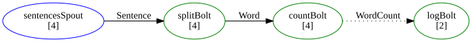

FsShelter
FsShelter is an F# library for building stream-processing pipelines. Define typed data flows where sources produce messages and processors transform and route them through a directed graph — all with compile-time safety and high-performance in-process execution.

Here's what a topology looks like — a schema, components, and the graph connecting them:
// Every DU case is a typed stream
type Schema =
| Sentence of string
| Word of string
| Count of string * int64
// Wire components into a graph
let myTopology = topology "WordCount" {
let spout = sentences |> Spout.runUnreliable (fun log cfg -> source) ignore
let split = splitWords |> Bolt.run (fun log cfg t emit -> (t, emit))
let count = countWords |> Bolt.run (fun log cfg t emit -> (t, emit))
yield spout --> split |> Shuffle.on Sentence
yield split --> count |> Group.by (function Word w -> w)
}
// Run it — no infrastructure required
let shutdown = Hosting.run myTopology
Packages
The library is split into two packages:
- FsShelter — the core library for defining topologies and running them in-process. Depends only on Disruptor for high-performance message passing.
- FsShelter.Multilang — Apache Storm cluster integration: task execution via the multilang protocol, Nimbus client for topology submission, and JSON/Protobuf serializers.
Use FsShelter alone for self-hosted topologies. Add FsShelter.Multilang when deploying to a Storm cluster.
Documentation
Getting started
- Core Concepts — Key terminology, schema, components, DSL, and delivery modes explained from scratch
- Word Count — Tutorial: build a complete fire-and-forget word count topology
- Guaranteed delivery — Tutorial: reliable spouts with ack/nack and anchoring
Reference
- Schema — Grouping expressions, record flattening, serializer details, special streams
- Running Topologies — Entry points, configuration, tuning, diagnostics
- Routing — How tuples are distributed: Shuffle, Fields, All, Direct
Deep dives
- Architecture — Internal runtime structure: tasks, executors, channels, lifecycle
- Message Flow — End-to-end processing scenarios with sequence diagrams
- Acker Algorithm — XOR-tree tracking for guaranteed message processing
API
- API Reference — Auto-generated documentation for public types, modules, and functions
Getting FsShelter
The core library (topology DSL, self-hosting runtime) can be installed from NuGet:
dotnet add package FsShelter
For Storm cluster deployment, add the multilang package from NuGet:
dotnet add package FsShelter.Multilang
Contributing and copyright
The project is hosted on GitHub where you can report issues, fork the project and submit pull requests. If you're adding a new public API, please also consider adding samples that can be turned into a documentation. You might also want to read the library design notes to understand how it works.
The library is available under Apache 2.0 license, which allows modification and redistribution for both commercial and non-commercial purposes. For more information see the License file in the GitHub repository.
val string: value: 'T -> string
--------------------
type string = String
val int64: value: 'T -> int64 (requires member op_Explicit)
--------------------
type int64 = Int64
--------------------
type int64<'Measure> = int64